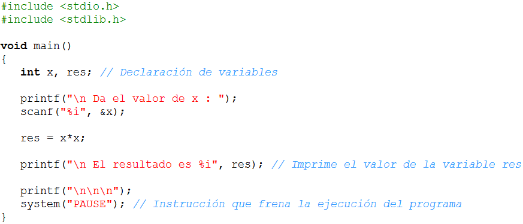

Objetivos:
- Que apliques los conocimientos sobre declaración de variables
en el desarrollo de un programa.
- Que seas capaz de utilizar las instrucciones de captura y desplegado
de información, así como el uso de operadores

Forma de
trabajo:
Actividad en equipos colaborativos e individual

Tiempo estimado:
90 minutos

Instrucciones:
- Intégrate con tu equipo colaborativo y sigue las indicaciones
del profesor.
- Junto con tus compañeros de equipo, analiza cada uno de
los ejercicios que se presentan a continuación. Identifiquen, en
equipo, cual sería el algoritmo para la solución de cada uno
de los ejercicios. Recuerden documentarlos en sus hojas membretadas.
- De manera individual escribe un programa en C para cada uno de
los ejercicios. Recuerda basarte en el algoritmo que se generó en
el equipo.
- Una vez que hayas terminado tu programa, es tu responsabilidad
ayudar a tus compañeros de equipo a que terminen su programa.
- Entrega, vía la plataforma, los archivos *.c que
contengan los programas en C.
El siguiente programa lee una variable de tipo entera y escribe
el valor de "res" en la pantalla. Utiliza este programa como ejemplo para
desarrollar tu laboratorio.

Sección
1.- Operaciones con variables "Enteras"
Escribe un programa completo en C, que convierta un tiempo expresado
en segundos al formato de horas, minutos y
segundos. Considera que el valor del tiempo en
segundos es proporcionado por el usuario.
Por ejemplo para un tiempo de
8243 segundos se desplegará lo siguiente:
- Horas:
2
- Minutos:
17
- Segundos:
23
Solicite un tiempo en segundos
y calcule la cantidad de horas, minutos y segundos. Despliegue los resultados
en pantalla.
Variables utizadas : tiempo, horas, minutos, segundos y residuo.
Sección 2.- Operaciones con variables de "Punto Flotante"
Escribe un programa completo en C que calcule el volúmen
(V) de un cilíndro recto de sección oblicua. Los valores
dados por el usuario son el radio (r) y las alturas (h1 y
h2) del cilíndro . El resultado obtenido (volumen)
debe ser desplegado en la pantalla.

El valor de PI debe ser declarado como una constante 3.141592.
Guardar esta sección con el nombre: A2_Matricula.c

Forma de
entrega:
- Envía tu laboratorio por blackboard, no se aceptarán
laboratorios por ningún otro medio.
- Envía solo tus archivos *.c.
- Los laboratorios enviados posteriormente a la fecha límite
NO SERÁN CALIFICADOS.
.
INSTRUCCIONES PARA ENVIAR TU LABORATORIO
POR BLACKBOARD
- Haz clic en la actividad
de Entrega de Laboratorio.
- Escribe comentarios
si lo consideras necesario.
- Da clic en el botón
de Browse My Computer y localiza el archivo *.c. Si necesitas
agregar más archivos repite este proceso hasta agregar todos tus
archivos.
- Haz clic en Submit.
- Al indicar que ha
subido exitosamente hacer clic en OK.
. |